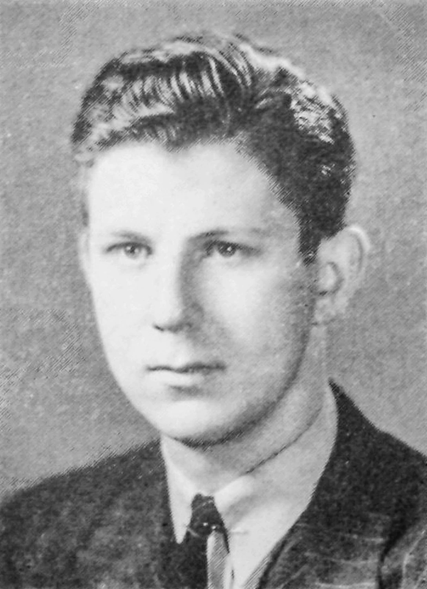

这样的工作，让你有劲
你更想理解一个人的日常健康习惯怎样形成或改变，喜欢通过交谈寻找线索。出现新的经历时，你愿意调整追问，继续核对不同解释。
工作的一天
工作假设例子：围绕一位参与者的日常活动习惯做访谈，遇到新的经历就调整追问。整理一份习惯变化记录，列出可能的解释和缺少的线索，供团队讨论后续研究。
可以优先了解的科室／行业方向
精神科
关注怎样通过交谈了解一位患者的心境变化，随新线索继续追问原因。
这里按工作特点提供探索线索，结合实际体验和培养要求再判断。
值得试试的职业道路
主要了解
个人健康行为研究
了解重点：理解一个人的日常健康习惯如何形成或改变，整理行为变化记录和待检验的解释。
对心理健康也有兴趣时
精神与心理健康相关临床工作
了解重点：还需接受相应专业临床训练，访谈兴趣不能代替诊疗能力。
想把解释用于行动时
健康行为支持项目
了解重点：从研究习惯变化转向试行支持办法，需要学习实施方法，并另行评价效果。
认识一位职业榜样

把喜欢，放进真实工作里
访谈按固定问题走完时，你可能想多问一段意外提到的经历。可以事先约定哪些追问能补充，补充问题仍须在知情同意范围内。